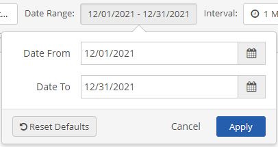
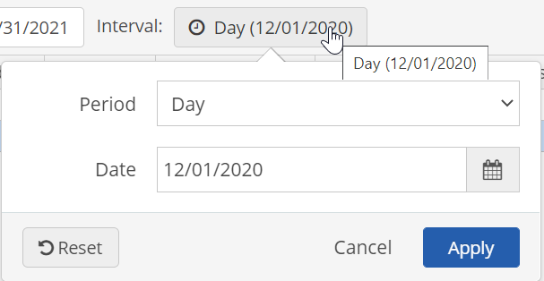
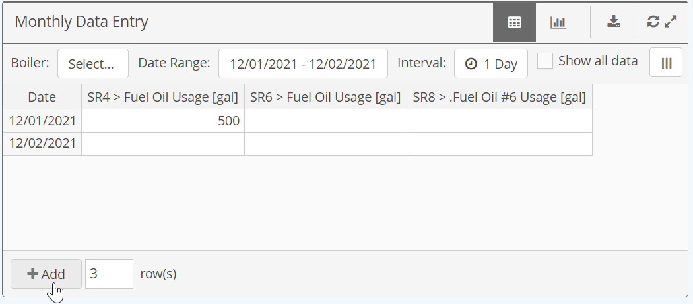
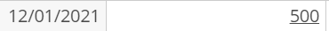
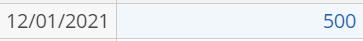

You can enter data in a numeric data table by typing directly into a cell or copying and pasting values into one or more cells, rows or columns.
Data may be entered in offline mode when the page has been downloaded first and cached. See Working Offline.
To enter data:
Select the Date Range for which you want to enter data, if the default dates shown are not what you want.
If the panel has its own date range field, then the panel date range will apply. If not, the date range at the top of the page will apply.
Select the date range field to edit the dates in the pop-up window, using the calendar or by manual entry. Click Apply.

The Interval field value shows the expected data entry interval. New rows will be added according to the set interval. When entry is expected for just a single date, the date for the data entry is shown in the field, defaulting to the current period. If it is not read-only, you can change the data interval by selecting the field, and editing the data interval parameters in the pop-up window.

Enter data by one of the following methods:
Manual data entry: Select a cell and type in value. Use the tab key to move to the next cell.
Copy and paste: From Excel, copy a single cell, a row or column, or several rows and columns together (arranged in the same order as the panel display). Then paste the data into the panel by selecting the cell to paste into (top left data cell for multiple cells), using Ctrl+V or the paste option.
You can download data to Excel using the download button, complete your data entry in Excel, then copy and paste it back into the table in the Portal. See Download Numeric Data to Excel.
To add more rows, enter the number of rows you want to add in the field at the bottom and click Add. Rows will be dated consecutively according to the Interval setting.

Any empty rows will be ignored when you save.
If the parameter is defined for Auto UOM Conversion, you can select the UOM and enter the data for that UOM and it will be converted to the base UOM. If the parameter is not defined for Auto UOM Conversion, the UOM will be read-only and the data must be entered according to that UOM.
When you have finished entering data, select Save.
If you are online, the data will be saved to the system.
If you are offline, the data will be saved to your cache to upload later when you are re-connected.
Data Status indicators:
Data that has not been saved will be underlined.

Saved or cached data will be blue until the data has been uploaded to the system.

If you are working offline, or get disconnected while working, your data will be cached. You can upload your data to the system after the connection is restored. See Entering Data Offline.